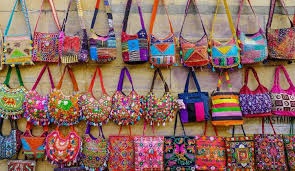

FAMOUS ARTICLES
1.Leather Goods(purse,wallets with Traditional Motifs)
Nowadays, India is the largest livestock company and a source for 10% of the world's leather requirement. Apparently things have always been this way, as India has a very rich history when it comes to leather tanning, dating back as far as the year 3000 BC.Silk and gold threads, along with metal embroidery and silk are used to give all leather goods an authentic traditional touch. You can buy just about anything in the dense bazaars north of the Fort. The most recommended, however, is Dhabu Street, where an array of local artisans exhibit their unique leather creations on a daily basis.
Where to find it:
Mangaldas Market Address: Janjikar Street, Lohar Chawl, Mumbai, Maharashtra, India Linking Road, Bandra (starts from Waterfield Road intersection) Hours: 10 am-10 pm Mon-Sun
DUPING: no
PRICE RANGE: They Starts from INR 400.
2.Traditional Embroidery Work
Enticing and exotic. This is how the famous embroidery of the Land of Shivaji should be described. Maharashtra has a vast cultural heritage and a vibrant spirit which never dies. Its embroideries earned their fame because of the versatility and complexity of designs created by skillful artisans.Among the things that distinguish Indian embroidery from Western works is that the Indians use only natural color for dying and various stitches, most popular being the Holbein, wave and cross stitches. Today, applications of this art can be seen on all possible items, such as stoles, purses, sarees, bed covers and cushions, and even footwear.
Where to find it:
Shrujan is a non-profit organization which carries intricate embroidery, work of women of more than a hundred villages in the area. The sophisticated clothing, wall hangings and purses created by them make truly exquisite gifts.
Shrujan Address: 38, Sagar Villa, Opposite Navroze Apt, Haji Ali, Bhulabhai Desai Road, Cumballa Hill, Mumbai - 400026, India Phone: +91 26183104, +91 23521693 shrujan.org Hours: 10 am-7 pm Mon-Sat Linking Road, Bandra (starts from Waterfield Road intersection) Hours: 10 am-10 pm Mon-Sun
DUPING: no
PRICE RANGE: starting from 500
3.Kolhapuri Chappals
Kolhapuri chappals (also called “Pie-taan” ) are a type of traditional leather sandals which take their name from the Kohlapur district of the state of Maharashtra.Worn all over India and abroad, these sandals have quite a history, although their exact date of origin is unknown. Kolhapuri chappals are completely handmade of leather, each featuring complex designs and decorations.
Where to find it:
Joy Shoes, Taj Shopping Arcade Address: P J Ramchandani Marg, Apollo Bandar, Mumbai, Maharashtra 400001, India Phone: +91 22 2202 8696 Linking Road, Bandra (starts from Waterfield Road intersection) Hours: 10 am-10 pm Mon-Sun
DUPING: no
PRICE RANGE: Kohlapuri chappals prices vary, depending on the leather quality and design, from Rs 100 to Rs 3,000.
FAMOUS SIGHT-SEEING SPOTS
1.Gateway of India-The Gateway stands at an angle, opposite to the Taj Mahal Palace and Tower Hotel, which was built in 1903.[40] In the grounds of the gateway, opposite the monument, stands the statue of Shivaji, the Maratha warrior-hero who fought against the Mughal Empire to establish the Maratha Empire in the 17th century.
2.Sanjay Gandhi National Park-Timings : National Park - 7:00 AM - 6:30 PM
Kanheri Caves - 9:30 AM - 5:30 PM
Time Required : 3-4 hours
Entry Fee :
Entry: INR 48 per adult.
INR 25 for children above five.
Kanheri caves: INR 5
3.Red Carpet Wax Museum-3, Kannamwar Nagar II, Vikhroli, Mumbai, Maharashtra 400083
INR 300 per adult
4. Haji Ali Dargah-The Haji Ali Dargah is a mosque and dargah or the monument of Pir Haji Ali Shah Bukhari located on an islet off the coast of Worli in the southern Mumbai.
5. Elephanta Caves-The Elephanta Caves are a collection of cave temples predominantly dedicated to the Hindu god Shiva.They are on Elephanta Island or Gharapuri in Mumbai Harbour, 10 kilometres (6.2 mi) east of Mumbai in the Indian state of Mahārāshtra.
6. Siddhivinayak Temple-The Shree Siddhivinayak Ganapati Mandir is a Hindu temple dedicated to Lord Shri Ganesh. It is located in Prabhadevi, Mumbai, Maharashtra, India.


FAMOUS FOOD ITEMS
1. Akuri on toast- Best place:Cafe Ideal, Girgaum Chowpatty
2. Batata Vada-Best places:1.Ashok Vada Pav, near Kirti College, Dadar
2.Aaram Vada Pav
3.Shivaji Vada Pav
4.Graduate Vada Pav
5.Gajanan Vada Pav
3. The Bombay Sandwich-Best place:Popular Sandwich, Lower Parel
Sandwich stalls outside Mithibai College, Vile Parle
4. Bhel Puri-Best places:Sharma Bhelpuri House,Golden Bhelpuri House,Chowpatty Beach
5. Chicken Mayo Roll-Best places:Hearsch Bakery,Hangla's,Carter's Blue
6. Ragda pattice-Best places:1.Ganesh Chaat place,2.Sharma Chaat Bhandar,3.Ram And Shyam
7. Faluda-Best places:1. Baba Falooda,2. Bachelorr’s,3. Badshah Falooda
8. Frankie-Best places:1. BreadKraft, Multiple Outlets2. Tibbs, Multiple Outlets 3. Move N Pick, Dadar


EXPLORE MUMBAI
Copyright ©️2022 All rights reserved